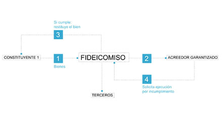
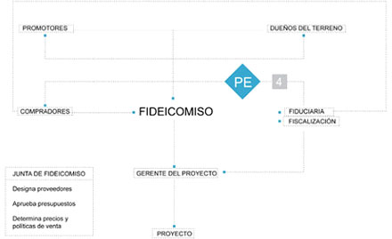
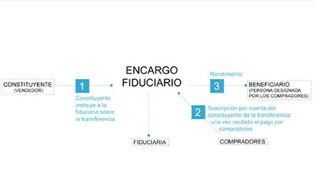
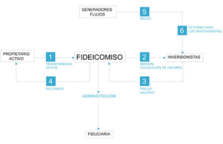
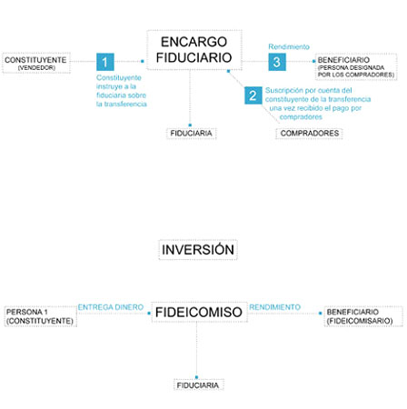

La realidad legal nos muestra que el fideicomiso puede concretarse para la realización de las más variadas formas jurídicas únicamente alcanzable por la imaginación humana y ello se debe a que dada la versatilidad que presenta el esquema legal. Hace que la puesta en práctica de un fideicomiso sea lo más atractivo de utilizar en el mercado económico actual. La estructura del Fideicomiso cuenta con una versatilidad encomiable dado que la ley solo especifica la puesta en marcha de Fideicomisos de neto corte financiero dejando abierto la posibilidad de diseñar todo tipo de figura contrato de fideicomiso respetando las pautas legales que la componen.
No obstante ello hay un cierto encasillamiento funcional del fideicomiso en virtud de existir grandes grupos o clases de fideicomisos que se dividen, como ser:
Definimos el fideicomiso de garantía como el contrato mediante el cual el fiduciante transfiere la propiedad (fiduciaria) de uno o mas bienes a un fiduciario con la finalidad de garantizar con ellos, o con su producido, el cumplimiento de ciertas obligaciones a cargo de aquel o de un tercero, designando como beneficiario al acreedor o a un tercero en cuyo favor, en caso de incumplimiento, se pagara la obligación garantizada.
El fiduciario recibe bienes destinados a garantizar el cumplimiento de determinadas obligaciones. A diferencia de las otras formas de garantía (prenda, hipoteca o fianza) sustituye el trámite judicial de ejecución y permite una venta más ordenada de los bienes.
La venta fiduciaria no constituye ejecución forzada sino un simple cumplimiento de una obligación, pudiendo actuar así porque tiene el dominio de los bienes fideicomitidos, y por tanto, puede disponer de ellos libremente, con las únicas limitaciones que se hubieran señalado en el acto constitutivo del fideicomiso.
La diferencia se puede dar en la mayor o menor potestad del acreedor, dado que si se transmite la propiedad del crédito el acreedor podría disponer del bien, y en caso de concurso o quiebra del cesionario, el fiduciario podría oponer a la masa del concurso el derecho que le asiste como tal.
El denominado "fideicomiso inmobiliario" no es un especie tipificada del genero contractual fideicomiso de la ley 24.441 ni tiene una regulación propia, sino que es una mas de sus muchas y variadas aplicaciones, bajo el paraguas de las normas del ti. I° de dicha ley. Es una aplicación del negocio fiduciario, estructurado ad hoc para emprendimientos inmobiliarios, mayormente destinados a viviendas en propiedad horizontal, conjuntos habitacionales, barrios cerrados, clubes de campo, locales comerciales, etc., cuyos beneficiarios o adquirentes son generalmente inversores o ahorristas no profesionales o consumidores finales, que financian el costo de la tierra y la construcción mas un plus de retribución o ganancia para el desarrollador u organizador.
En realidad las combinaciones y participación en el negocio, particularmente de los inversores y desarrolladores, son múltiples. Aun cuando hay alguna practica general y parecidos, no hay un esquema, patrón fijo, sino que depende de cómo se conjugan los recursos que cada parte aporta o invierte en el negocio y la ganancia o ventaja que pretenden obtener.
Se puede desprender de este tipo de fideicomiso, el mencionado FIDEICOMISO INMOBILIARIO AL COSTO, que es un tipo de estructuración de negocio que implica que cada uno de los interesados en acceder a un inmueble - vivienda, lote, local comercial, etc.- asuma la figura de inversor por su porcentaje de participación. Invertir en un emprendimiento al costo esta asociado a las expectativas respecto de la evolución de los precios finales de los inmuebles y los costos de construcción. En general la operatoria al costo gana fuerza cuando el sistema financiero no participa de manera activa en el mercado de bienes raíces y la inflación es alta o creciente la expectativa. En la medida que se esperen crecimientos en los precios de los productos finales, aumente la propensión a participar en este tipo de negocio.
El fiduciante transmite bienes al fiduciario, para que este los administre, ya sea en beneficio del instituyente o de un tercero. Aún cuando no lleven la denominación de tal, no son sino fideicomisos de administración los que ejercen las entidades gerentes de fondos comunes de inversión y las administradoras de fondos de jubilaciones y pensiones.
En los Fondos Voluntarios de Pensiones, se constituyen como complemento de los aportes previsionales obligatorios y pueden constituirse con recursos de los propios interesados o de empresas patrocinadoras, a favor de su personal.
Mediante esta modalidad se procura la transmisión del dominio al beneficiario. Si bien en todos los fideicomisos existe una transferencia de dominio de bienes del instituyente al fiduciario, en doctrina se reserva esta denominación para aquellos supuestos en que tal transmisión es definitiva, sin que exista la posibilidad de que los bienes reviertan al fideicomitente quedando totalmente desligado de los mismos, como cualquier vendedor.
La ley 24441 en su artículo 3°, establece que el fideicomiso se puede establecer por testamento, en algunas de las formas previstas por el Código Civil, como lo autorizan otras legislaciones.
La ley prevé que si el designado testamentariamente no acepta el cargo, debe ser reemplazado según los mecanismos previstos en el acto constitutivo y si no hubiere sustituto designado, o tampoco aceptare, el juez designará fiduciario financiero por la Comisión Nacional de Valores.
Así siempre habrá transmisión fiduciaria de los bienes, con lo que la voluntad del testador se cumple inexorablemente.
Los requisitos de forma son los previstos por las normas del Código Civil que rigen los actos de última voluntad.
Por una parte, están prohibidas las sustituciones fideicomisarias, en las que el traspaso de bienes está supeditado a la muerte del heredero (arts. 3723 y ss. y sus notas), por otro, se debe respetar la porción legítima de los herederos forzosos (arts. 3591 y ss.).
Los bienes que sean objeto del fideicomiso deben ser determinados e individualizados, no pudiendo ser objeto de las transmisiones fiduciarias las universidades.
Si bien no está tratado específicamente en la ley 24441, en esta especie de fideicomisos, el Estado (nacional, provincial o municipal), por medio de sus dependencias y en su carácter de fiduciante, transmite la titularidad de bienes del dominio público o del dominio privado de su pertenencia, o afecta fondos públicos, para realizar un fin lícito de interés público.
Un acto jurídico (ley, decreto) da viabilidad al fideicomiso y fija sus objetivos y características, determina las condiciones y términos a que se sujetará la contratación.
Son ejemplos de este tipo, el creado por el decreto 286/95 , por el que se constituyó un Fondo Fiduciario para el Desarrollo Provincial, que asistiría a los bancos de provincia sujetos a privatización y el fomento de las privatizaciones de empresas provinciales en las condiciones previstas en el mismo.
Otro caso fue el fideicomiso constituido para amortiguar las consecuencias derivadas del llamado "efecto tequila", creado por decreto 445/95 y denominado Fondo Fiduciario de Capitalización Bancaria, cuyo objeto fue constituir una estructura de apoyo a la reestructuración del sistema financiero nacional en ese momento de crisis.
Por el decreto 675/97 se creó el Fondo Fiduciario de Capital Social, con la finalidad de facilitar el desarrollo del sector de la microempresa de menores recursos a nivel nacional.
En cuanto a su tratamiento tributario, cabe entender que si la capacidad contributiva significa apreciación por el legislador de los hechos económicos que se verifican para el sujeto le permiten distraer una suma de dinero de su necesidades privadas para destinarla a contribuir con sus necesidades públicas, este concepto no tiene sentido si el hecho imponible se le atribuye al Estado.
El Estado se encuentra exento del impuesto a las ganancias. Sin embargo, el fiduciario debería determinar la renta generada por el fideicomiso y atribuírsela a quien reviste el carácter de fiduciante-beneficiario. Esta situación implicaría la atribución de ganancias a un sujeto exento subjetivamente por lo que no existiría perjuicio sustancial
Así, se ha dictaminado que los fondos cedidos por el Estado Nacional en fideicomiso, gozan de la inmunidad fiscal en el mismo y los fondos fiduciarios no resultan sujetos a los impuestos a cargo de la A.F.I.P., apartándose de la formalidad del impuesto a las ganancias y en virtud del principio de razonabilidad y de realidad económica.
A su vez, al encontrarse el Estado exento del impuesto a las ganancias, dicha inmunidad también corresponde frente al impuesto a la ganancia mínima presunta, gravamen complementario de aquél y que, de aplicarse, repercutiría como un costo del fondo fiduciario, reduciendo en definitiva el patrimonio estatal.
Se regula en forma expresa en los artículos 19 a 24 de la Ley N° 24.441 el Fideicomiso Financiero. Su regulación permite contar con un marco legal adecuado para la emisión de títulos valores, en particular dirigido a la titularización de activos. Titularizar o securitizar es el proceso financiero a través del cual se captan fondos mediante la emisión de títulos valores con respaldo en activos (cosas o derechos), previamente seleccionados y determinados de modo homogéneo, para facilitar la adecuada valorización y reducción de riesgos.
El riesgo de inversión está centrado en las posibilidades de repago de los títulos de deuda según los activos que resguardan el flujo de fondos.
El propósito perseguido es la obtención de financiación sin recurrir a la tradicional intermediación financiera, reduciendo los costos del financiamiento en virtud de la colocación y negociación de los títulos en el mercado de capitales. La clave de este proceso está dada por el adecuado aislamiento jurídico de los bienes que respaldan o garantizan la emisión.
Los fideicomisos financieros se adaptan para estructurar la captación privada de inversionistas para la adquisición de grandes empresas, en ocasiones con fuerte tasa de riesgo.A la finalización de la fiducia, por ejemplo, destinando bienes a ser entregados a los hijos al cumplir la mayoría de edad.
Habrá Fideicomiso cuando una persona (Fiduciante) transmita la propiedad Fiduciaria de bienes determinados a otro (Fiduciario), quien se obliga a ejecerla en beneficio de quien se designe en el contrato (Beneficiario), y a transmitirlo al cumplimiento de un plazo o condición al fiduciante, al Beneficiario o al Fideicomisario".
(Art. 1° de la Ley 24.441 del Financiamiento de la Vivienda y la Construcción). Así lo establece el artículo 15 de la ley 24.441, "Los bienes Fideicomitidos quedarán exentos de la acción singular o colectiva de los acreedores del Fiduciario. Tampoco podrán agredir los bienes fideicomitidos los acreedores del fiduciante."
Son aquellos en los cuales el fiduciario recibe de su cliente (fiduciante) un bien inmueble con el fin de que ésta lo administre, desarrolle un proyecto de construcción y venda las unidades construidas a los compradores.
El nacimiento del fideicomiso surge con la suscripción del contrato de fideicomiso entre el fiduciario y el/los fiduciante/s, en tal contrato se perfecciona la transmisión de dominio del terreno sobre el cual se desarrollara el emprendimiento cuyo gerenciamiento le es encomendado al fiduciario, quien pasa a ejercer el dominio fiduciario del inmueble que da nacimiento a un patrimonio (fondo fiduciario) absolutamente separado del patrimonio del fiduciario y del fiduciante.
Como contrapartida el fiduciante recibe derecho sobre el resultado que se genere en el fondo. Por tratarse de un fideicomiso financiero, el derecho se instrumenta mediante la emisión de certificados de participación cuyo primer titular pasa a ser el fiduciante, pero que posteriormente éste puede libremente negociar en el mercado.
El administrador selecciona y suscribe, por cuenta del fideicomiso el respectivo contrato de locación de obra previamente pactados en el respectivo plan de certificaciones los cuales son cancelados previo dictamen favorable de una o mas empresas especializadas en auditoría de obra.
El dinero necesario para afrontar el avance de la obra proviene de dos fuentes. Primero se suscriben compromisos de venta de unidades con clientes (preventa de unidades), quienes aportan al fideicomiso durante la etapa de construcción una parte del precio de venta final de la unidad a construir.
Estos pagos revisten la naturaleza de anticipo de precio y constituyen por lo tanto un pasivo para el fondo. La otra fuente de ingresos está dada por la financiación.
El fideicomiso emite a partir de su constitución, títulos de deuda con garantía hipotecaria. Dichos títulos son emitidos en sucesivas series, de forma tal que cada avance de obra certificado, que aumenta el valor del activo del fondo, constituye el mayor valor de la garantía hipotecaria que posibilita el lanzamiento de la nueva serie.
Los títulos de deuda cuentan con una fuerte garantía, adicional a la hipotecaria, que viene dada, precisamente por el aislamiento del proyecto en un patrimonio autónomo fiduciario y por la calificación otorgada por compañías evaluadoras que analizan la factibilidad de emprendimiento.
Este mecanismo da lugar a la obtención de tasas cada vez más bajas, ya que el avance de la obra y el éxito obtenido en la pre-venta de unidades constituyen factores que impactan directamente en la reducción del riesgo proyecto; pero teniendo la seguridad de contar para todas las emisiones con una tasa máxima garantizada.
Una vez finalizada la construcción las unidades terminadas son entregadas a los clientes quienes cancelan el saldo de precio.
